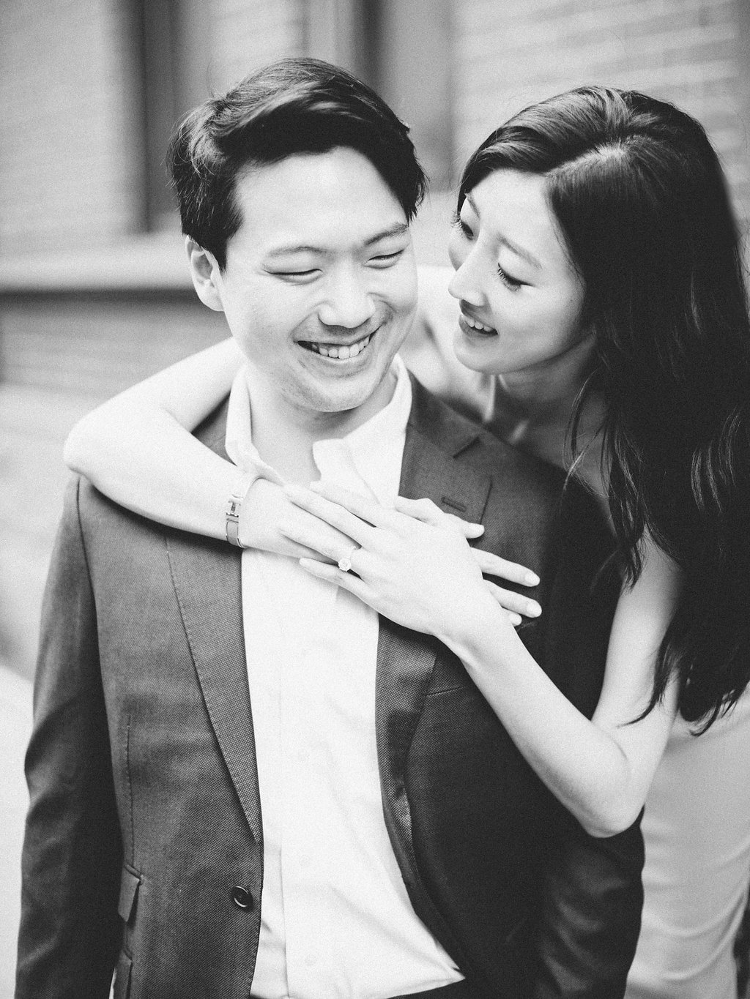

Lauren Said Kay
January 21st, 2012 is when it all began. Lauren and her friend decided to fight through the freezing cold and head over to the city for a fun night. But, at least she didn’t have to continue being in the cold because her friend’s friends picked them up from Penn Station. Lauren was so ready to get into the car so she opened the door and that’s when Lauren and Peter saw each other for the first time. Throughout the night in Ktown, Lauren and Peter didn’t interact much and even sat in the seats furthest away from each other. But they had to have talked somehow to get to know each other, right? At the next spot that the group went to, of course with the heavy winter jackets, they had to do coat check. This is where the Kdrama starts.
Peter and Lauren happened to be next to each other on line so Peter asked Lauren if he could put his wallet and car keys inside her bag and check it in together. They decided to do so and then they went back to just doing their own thing like before. No need to really chat and get to know each other, they just needed to get their coats and bag back later and that’s it. So, when It was finally time to leave, Lauren reached into her pocket and realized her coat check was missing. She started panicking and even barged inside the coat check area to check all the racks herself but her coat and bag were nowhere to be found. Meanwhile, Peter stayed calm despite the constant notifications on his phone telling him someone was using his credit card at a Duane Reade. When we got to duane reade, the cashier told us the people had just left. So, we had no choice but to take it to the po-pos. The first paper that Lauren and Peter signed together was a police report. That’s one way to get to know someone’s personal information right?
After the crazy but eventful night, Lauren continued to get calls not from Peter but from the Detective investigating their case and she called Peter every single time she got an update call to soothe her worried self. After multiple phone calls, Peter turned this horrible incident to something memorable by asking Lauren out for dinner. They had their first actual conversation at Benihana and even got dessert after at Red Mango. Suave move Peter! But, little did he know, he had to continue pursuing her for two more years before receiving the oKay to become her boyfriend on 08/25/2013. Four more years later, on their 4th anniversary, Peter asked Lauren to spend the rest of their lives together and #LaurensaidKay!
On their 5th anniversary, Peter and Lauren will be husband and wife and live happily ever after.
